Why do we need to process the data?
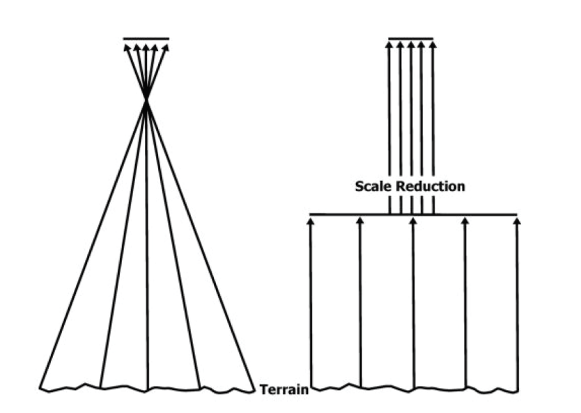
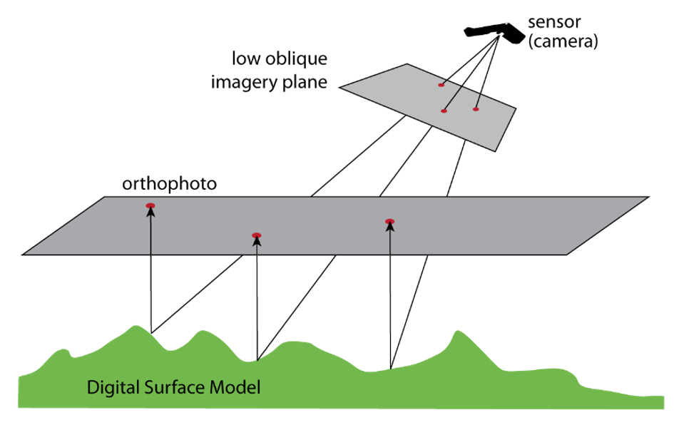
Why do we need to process the data?
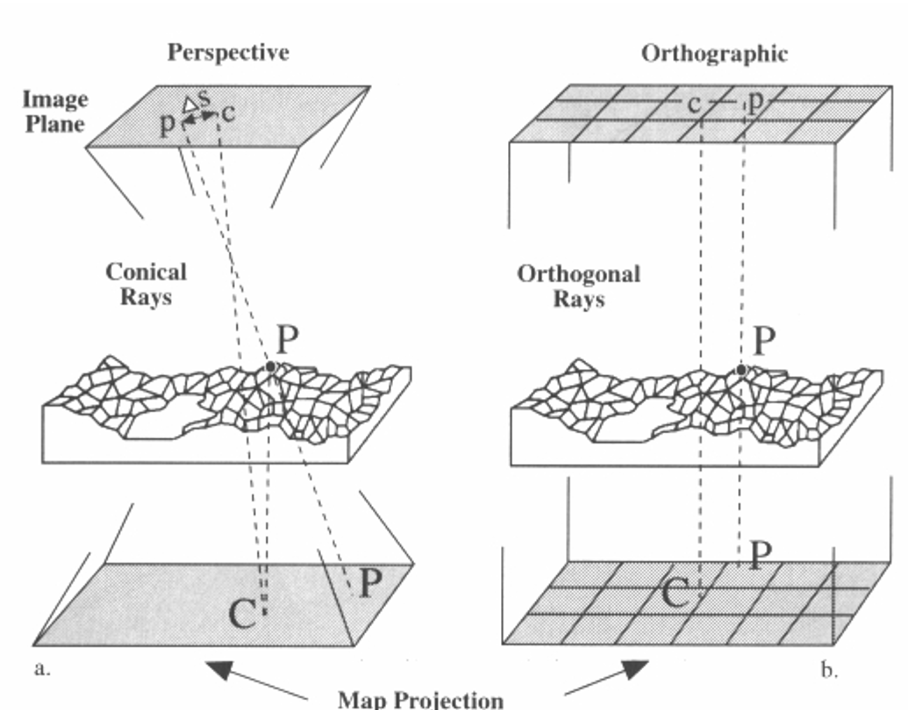
Orthorectification
Process that removes:
- effects of relief displacement,
- optical distortions from the sensor,
- geometric perspective
from a photograph or digital image
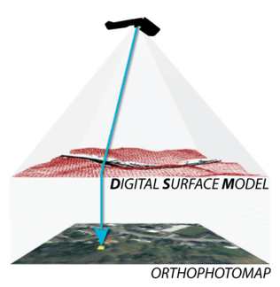

The resulting image - an orthophoto or orthoimage.
Orthophoto
- Photo that has the same lack of distortion as a map (geometrically corrected, uniform scale);
- Can be used to measure true distances
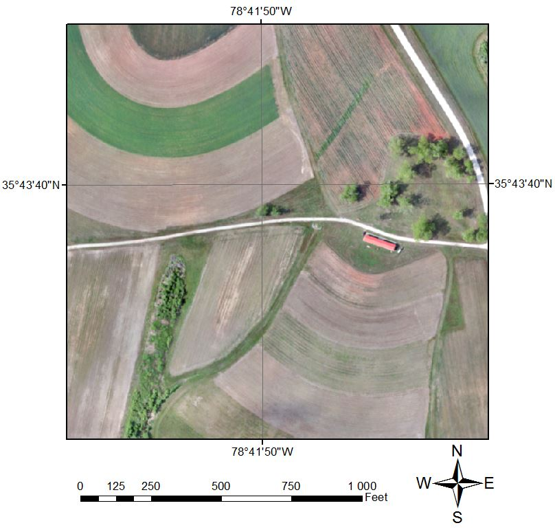
Orthorectification

Orthorectification

Orthorectification

Orthorectification

Orthorectification

Orthorectification

Orthorectification

How do we get there?
Old way: analogue
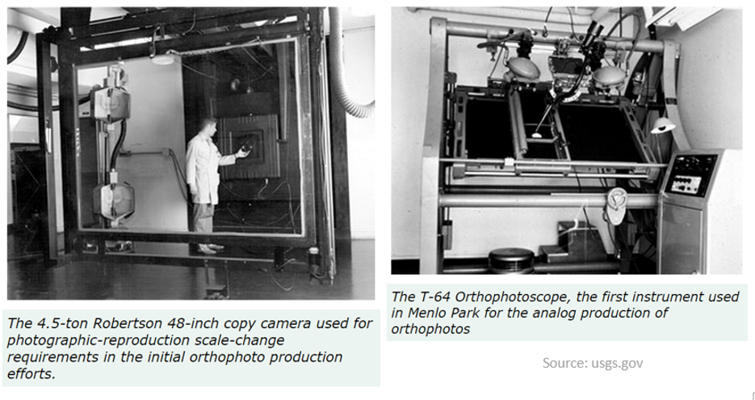
Now: digital

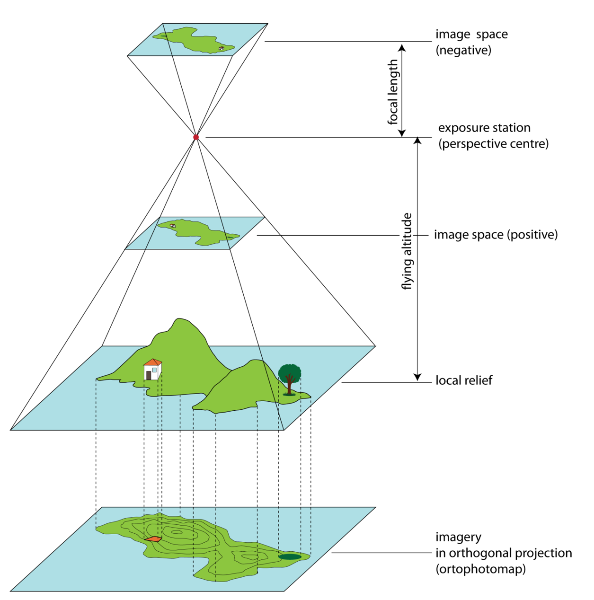
Geoprocessing - workflow

Geoprocessing - workflow

Geoprocessing - workflow

Geoprocessing - workflow

Geoprocessing - workflow

Geoprocessing - workflow

Geoprocessing - workflow

Geoprocessing - workflow

Geoprocessing - workflow

Geoprocessing - workflow

Geoprocessing - workflow

Geoprocessing - workflow

What do we need?
- Digital imagery;
- (Digital elevation model or topographic dataset)
- (Exterior orientation parameters from aerial triangulation or IMU);
- (Camera calibration report);
- (Ground Control Points parameters);
- Photogrammetric processing software that utilizes collinearity equations.
What do we need?
- Digital imagery;
- .
- ..
- .
- .
- Photogrammetric processing software that utilizes collinearity equations.
Multiple-view geometry questions
- Scene geometry (structure):
Given 2D point matches in two or more images, where are the corresponding points in 3D?
- Correspondence (stereo matching): Given a point in just one image, how does it constrain the position of the corresponding point in another image?
- Camera geometry (motion): Given a set of corresponding points in two or more images, what are the camera matrices for these views?
Structure from Motion (SfM)
- range imaging technique,
- process of estimating 3D structures from 2D image sequences,
- may be coupled with local motion signals
Structure from Motion (SfM)

Structure from Motion (SfM)

Structure from Motion (SfM)

Structure from Motion (SfM)

Structure from Motion (SfM)

Structure from Motion (SfM)

Structure from Motion (SfM)

Structure from Motion (SfM)

Structure from Motion (SfM)

Structure from Motion (SfM)

Structure from Motion (SfM)

Structure from Motion (SfM)

Structure from Motion (SfM)

Structure from Motion (SfM)

Structure from Motion (SfM)

What do we need?
- Digital imagery;
- (Digital elevation model or topographic dataset)
- (Exterior orientation parameters from aerial triangulation or IMU);
- (Camera calibrationreport);
- (Ground Control Points parameters);
- Photogrammetric processing software that utilizes collinearity equations.
1. Digital imagery

What do we need?
- Digital imagery;
- (Digital elevation model or topographic dataset)
- (Exterior orientation parameters from aerial triangulation or IMU);
- (Camera calibrationreport);
- (Ground Control Points parameters);
- Photogrammetric processing software that utilizes collinearity equations.
2. Digital Elevation Model
Before: Shape of the ground surface must be known in order to remove the effects of relief displacement
Now: computed automatically by Structure from Motion
What do we need?
- Digital imagery;
- (Digital elevation model or topographic dataset)
- (Exterior orientation parameters from aerial triangulation or IMU);
- (Camera calibrationreport);
- (Ground Control Points parameters);
- Photogrammetric processing software that utilizes collinearity equations.
3. Exterior orientation (EO)
EO= position and orientation in the object space
6 elements necessary for any photogrammetric processing:
- X, Y, and Z of the exposure station position (latitude, longnitude and altitude of the camera),
- angular orientation: ω, φ, and κ (yaw, pich and roll)
Flight log
- Onboard Inertial Measurement Unit (IMU) accurately measure the orientation of airborne sensors,
- Information is logged into a text file (flight log),
- Contains elements of exterior orientation

What do we need?
- Digital imagery;
- (Digital elevation model or topographic dataset)
- (Exterior orientation parameters from aerial triangulation or IMU);
- (Camera calibration report);
- (Ground Control Points parameters);
- Photogrammetric processing software that utilizes collinearity equations.
4. Interior orientation
- Before: camera calibration report,
- Now: Self-calibration (auto-calibration) is the process of determining intrinsic camera parameters directly from uncalibrated images
- Can be automatically derived using Structure from Motion (SfM) methods
4. Interior orientation
- Camera geometry (motion): Given a set of corresponding points in two or more images, what are the camera matrices for these views?
- Camera parameters can be derived from the calibrated pictures
5. Ground Control Points
GCP - target in the project area with known 3 coordinates (X,Y,Z or lat, long, alt).
Accurate, well placed and marked GCPs are essential elements for aerial triangulation
Photo Identifiable (Photo ID):
- any feature on the ground,
- specific (e.g. corners)
- unmovable,
- not covered by vegetation
- it can be surveyed later on.
Ground Control Points
Pre-marked (Panels): marking or painting figures or symbols on the ground before the UAS flies
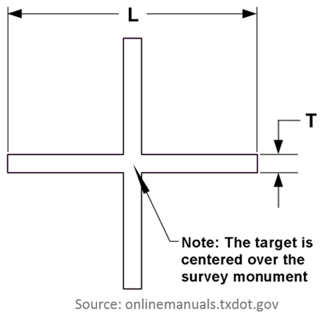
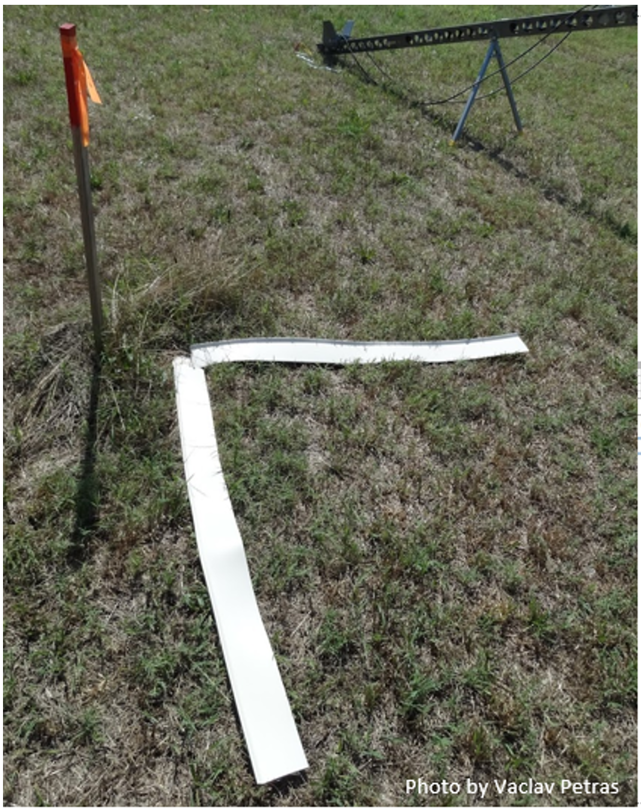
Processing software - overview
 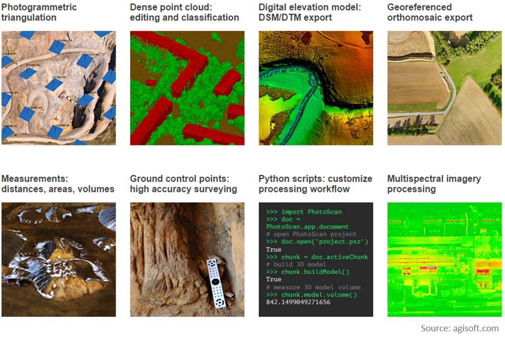>
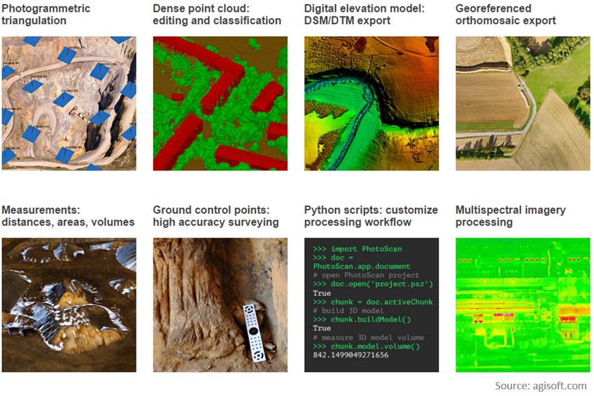>
Processing options

Processing options
Everything boils down to... money (and time)
- What is my starting budget and equipment?;
- How frequently will I fly?;
- Do I have the experience/ training necessary for processing (or am I able to hire people who do)?
- Do I have time to process the data by myself?;
>
Processing options - software
>
Processing options - software
Comprehensive comparison of more than 30 common software platforms used to operate UAVs and analyze resulting aerial imagery avaliable here
- provides a brief description of each software platform
- includes corresponding links for additional information and download
- groups software is following categories:
- UAV Control
- Ground Station
- Image Processing
- Image Processing - Photogrammetric
- Image Processing - Structure from Motion / Multi-Stereo View
- 3D Processing
- Object Based Classification
- Data Management/Platforms
- Computer Vision
>
Processing options - online (cloud)
Agisoft PhotoScan Professional
- Image-based solution aimed at creating 3D content from still images;
- Operates with arbitrary images and is efficient in both controlled and uncontrolled conditions;
- Both image alignment and 3D model reconstruction are fully automated.
Processing workflow
Preprocessing stage:
- loading photos into PhotoScan;
- inspecting loaded images, removing unnecessary images.
Processing:
- Aligning photos;
- Building dense point cloud;
(optional: editing dense point cloud)
- Building mesh (3D polygonal model);
(optional: editing mesh)
- Generating texture;
Exporting results
Preprocessing
- Loading photos,
- Loading camera positions (flight log)
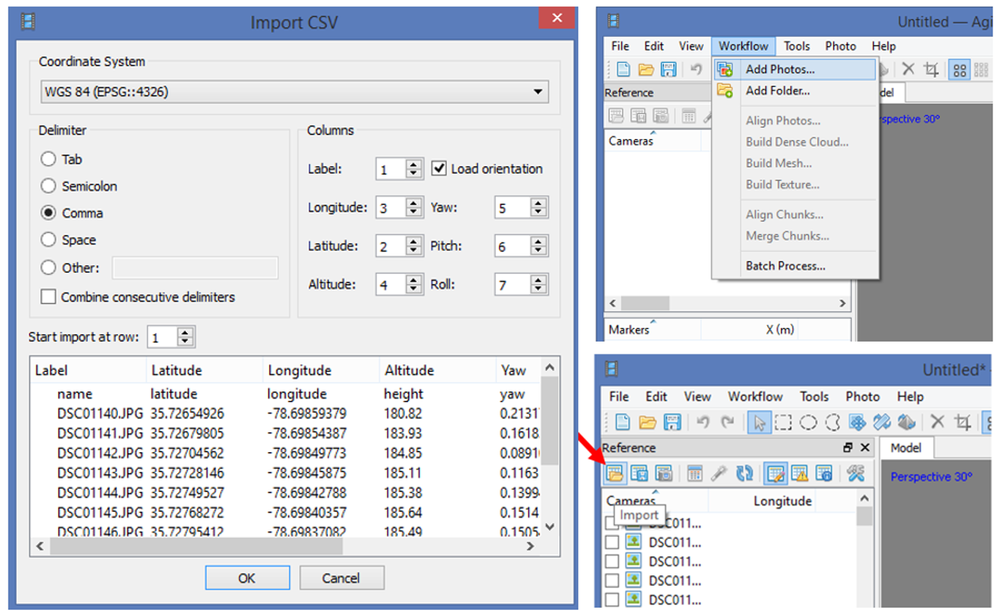
1. Aligning photos
At this stage Agisoft PhotoScan:
implements SfM algorithms to monitor the movement of features through sequence of multiple images:
- obtains the relative location of the acquisition positions,
- refines camera calibration parameters,
- sparse point cloud and a set of camera positions are formed.
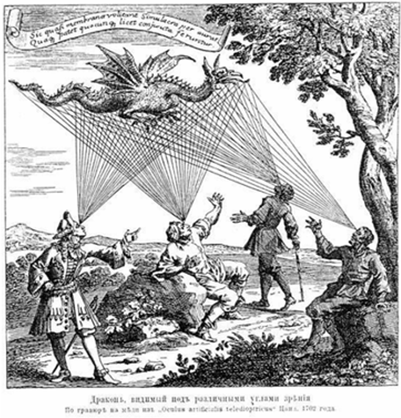
Bundle Block Adjustment
- Non-linear method for refining structure and motion
- Minimizing reprojection error
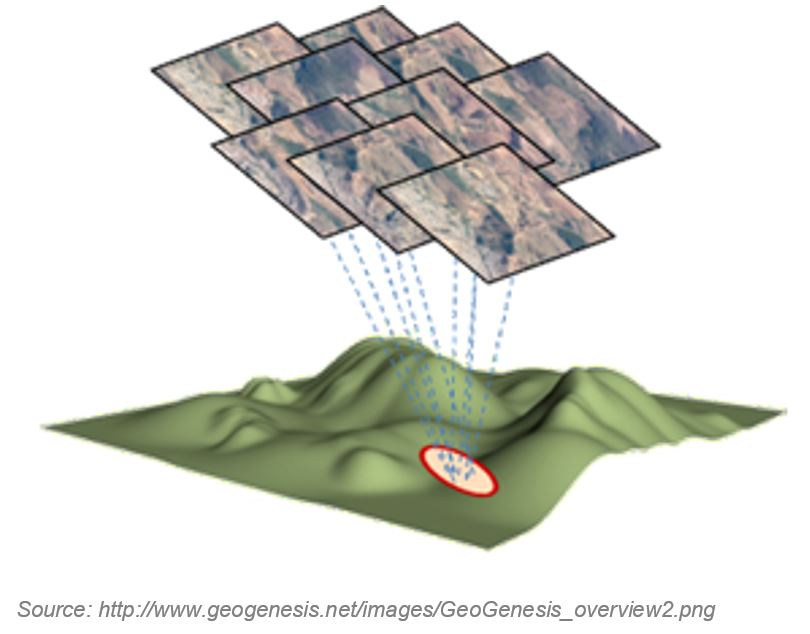
Bundle Block Adjustment
- Detecting image feature points (i.e. Various geometrical similarities such as object edges or other specific details);
- Subsequently monitoring the movement of those points throughout the sequence of multiple images;
- Using this information as input, the locations of those feature points can be estimated and rendered as a sparse 3D point cloud
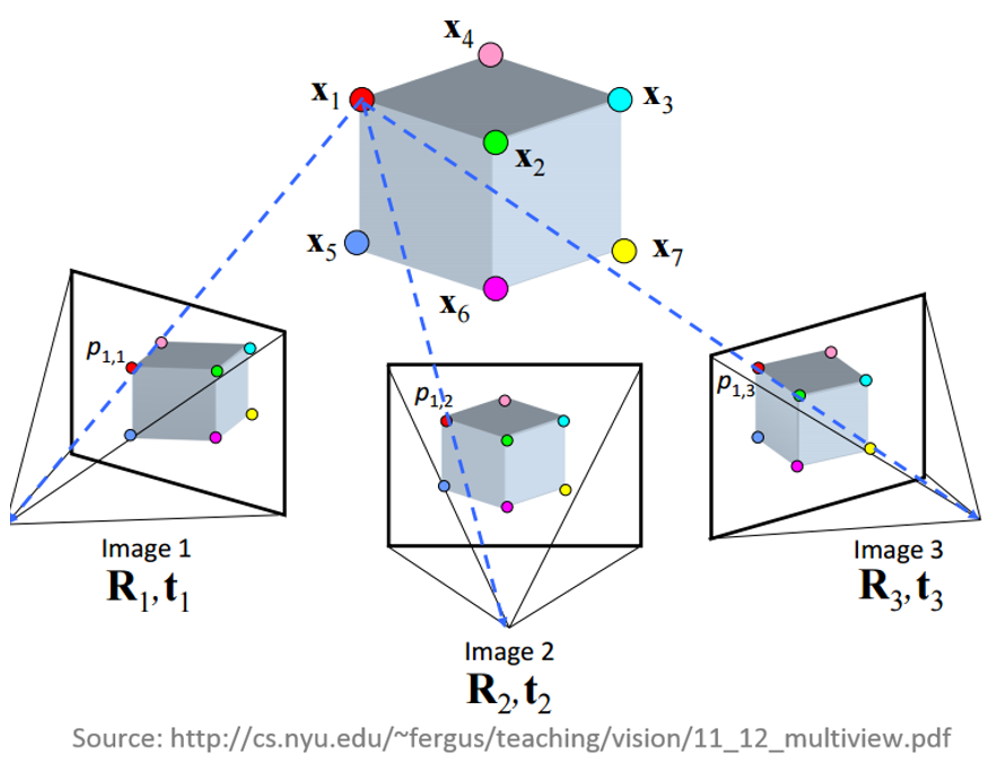
Aligning cameras in PhotoScan
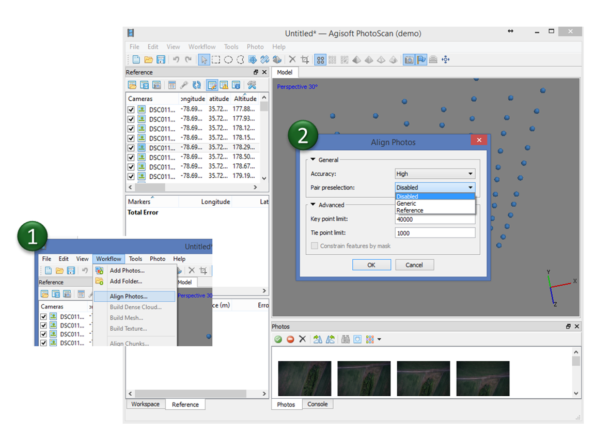
Accuracy
- High accuracy setting > more accurate camera position estimates (time consuming);
- Low accuracy setting > rough camera positions.
2. Building dense point cloud
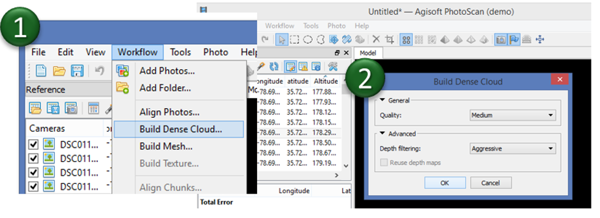
At the stage of dense point cloud generation reconstruction PhotoScan calculates depth maps for every image
Quality
- Highest, High, Medium, Low, Lower> the higher quality the more accurate camera position estimates but the process is more time consuming
2. Building dense point cloud
Depth Filtering modes
Algorithms sorting outliers (due to some factors, like poor texture of some elements of the scene, noisy or badly focused images)
- Mild depth filtering mode > for complex geometry (numerous small details on the foreground), for important features not to be sorted out;
- Aggressive depth filtering mode > sorting out most of the outliers;
- Moderate depth filtering mode > results in between the Mild and Aggressive
Optional: editing dense point cloud
- Automatic filtering based on specified criterion (sparse cloud only):
- Reprojection error;
- Reconstruction uncertainty;
- Image count.
- Automatic filtering based on applied masks (dense cloud only);
- Reducing number of points in cloud by setting tie point per photo limit (sparse cloud only);
- Manual points removal
3. Building mesh
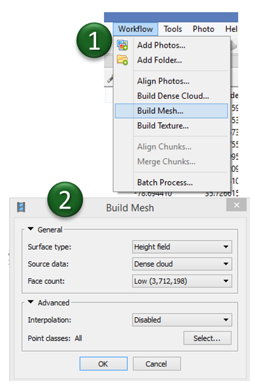
- Arbitraty > for modeling of any kind of object
- should be selected for closed objects (statues, buildings, etc.);
- memory consumption: high
- High field > for modeling of planar surfaces
- should be selected for aerial photography;
- memory consumption: low
- allows for larger data sets processing.
Optional: editing mesh
- Decimation tool > decreases the geometric resolution of the model by replacing high resolution mesh with a lower resolution one;
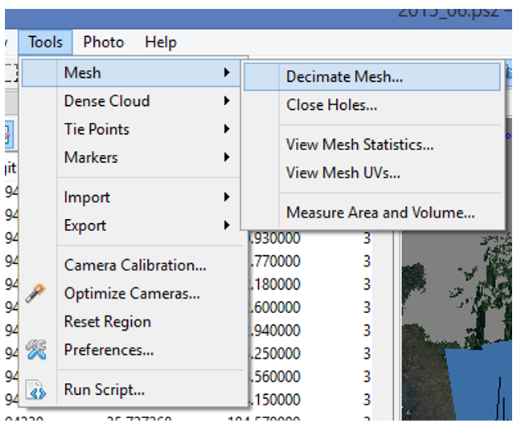
- Close Holes tool > repairs your model if the reconstruction procedure resulted in a mesh with several holes, due to insufficient image overlap
Optional: editing mesh
- Automatic filtering based on specified criterion:
- Connected component size,
- Polygon size.
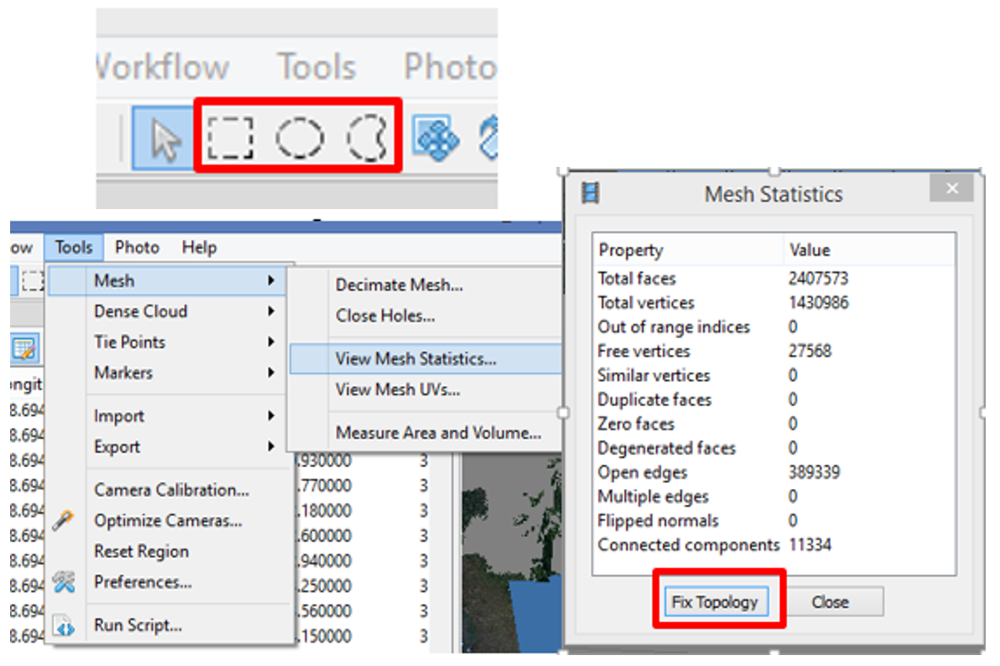
- Manual polygon removal,
- Fixing mesh topology,
- Editing mesh in the external program
export mesh for editing in the external program > import edited mesh
4. Generating texture
- Determines how the object texture will be packed in the texture atlas;
- Effects the quality of the final model;
- Texture mapping modes:
- Generic,
- Adaptive orthophoto,
- Orthophoto,
- Spherical,
- Single photo,
- Keep uv.
Texture mapping modes
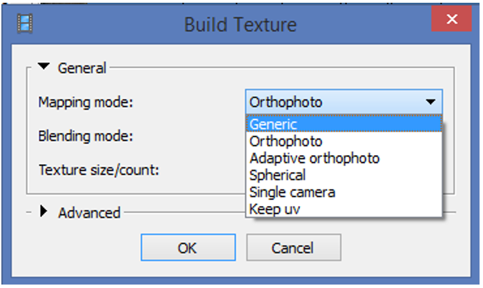
- Generic
- creates as uniform texture as possible.
- Adaptive orthophoto
- The object surface split into the flat part and vertical regions;
- The flat part of the surface textured using the orthographic projection,
while vertical regions textured separately to maintain accurate texture representation in such regions;
- More compact texture representation for nearly planar scenes + good texture quality
for vertical surfaces.
Texture mapping modes
- Orthophoto
- The whole object surface textured in the orthographic projection;
- Even more compact texture representation than the Adaptive orthophoto at
the expense of texture quality in vertical regions.
- Spherical
- Only for objects that have a ball-like form.
- Single photo
- Texture from a single photo (photo can be selected from 'Texture from' list)
- Keep uv
- Generates texture atlas using current texture parametrization;
- Rebuilding current texture with different resolution or generating
the atlas parametrized in the external software.
Texture generation parameters
Blending mode (not used in Single photo mode)
Selects the way how pixel values will
be combined to the final texture
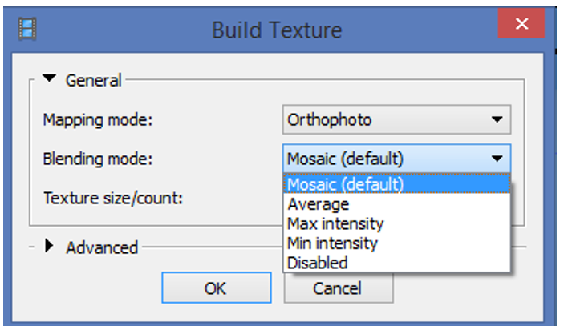
- Mosaic -
gives more quality for orthophoto and texture atlas than
Average mode, since it does not mix image details of overlapping photos but uses most appropriate
- Average -
uses the average value of all pixels from individual photos
- Max Intensity -
the photo which has maximum intensity
of the corresponding pixel is selected
Texture generation parameters
Texture size / count
Specifies the size (width & hight) of the texture atlas in pixels and determines the number of files for texture to be exported to:
- several files > archive greater resolution,
- single file can fail due to RAM limitations.
Enable color correction
- for processing of data sets with extreme brightness variation,
- takes up a long time.
Memory requirements
Aligning Photos

Building Model (Height-field mode)

Memory requirements
Building Model (Arbitrary mode)

Decimating Model

Exporting results
and saving intermediate results
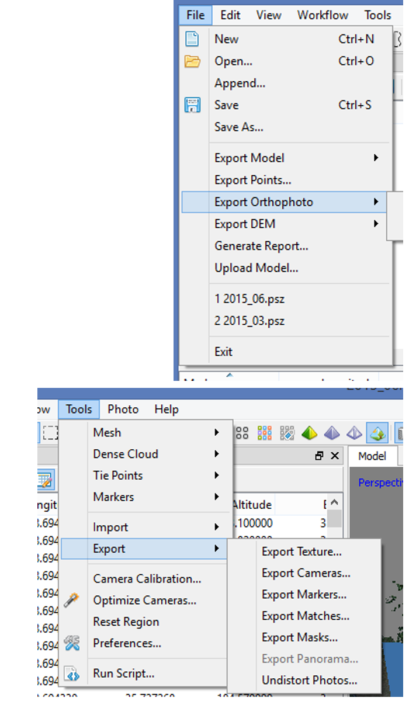
- Point cloud export
- Camera calibration and orientation data export
- Tie points data export (matching points and panoramas)
- 3D model export
- Orthophoto export
- DEM export
- Processing report generation
Processing report
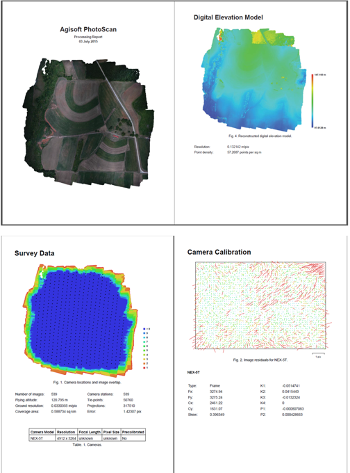
Includes:
- Orthophoto and digital elevation model sketch;
- Camera parameters and survey scheme
- Tie points data export (matching points and panoramas)
- Image overlap statistics
- Camera positioning error estimates
- Ground control point error estimates
Batch processing

Ground Control Points
- Marker positions are defined by their projections on the source photos;
- used for:
- setting up a coordinate system,
- photo alignment optimization,
- measuring distances and volumes,
- marker based chunk alignment.
- more photos used to specify marker position > higher accuracy of marker placement
Ground Control Points

Placing markers
video tutorial
- Click 'Filter Photos by Markers';
- Open an image by double clicking the thumbnail - the GCP will appear as a grey icon;
- Drag the marker to the correct measurement position;
- the marker will appear as a green flag, meaning it is enabled and will be used for further processing.
Optimize Camera Alignment
- Set the marker coordinates for optimization (check markers /uncheck cameras);
- Click Settings toolbar button on the Reference pane and set the coordinate system;
- Specify the assumed accuracy of GCP measurements and marker projections on the source photos
- click 'Optimize Camera Alignment'.
Quality processing with GCPs
- Marker positions are defined by their projections on the source photos;
- Point cloud the texture and mesh is generated again.
- In practice: start geoprocessing over, begining from point 2. Build the dense point.
used for:
- more photos used to specify marker position > higher accuracy of marker placement